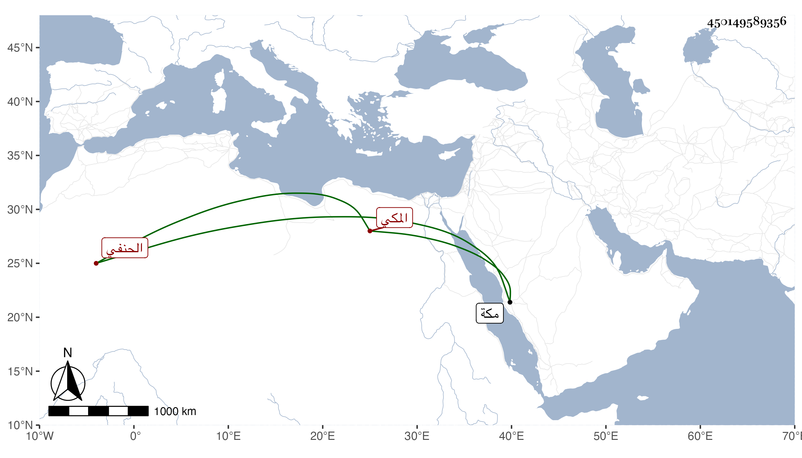

0902Sakhawi.DawLamic.ITO20230111-ara1.EIS1600.450149589356
Biography ID: 450149589356
418
شمامة ابنة القاضي الشهاب بن الضياء محمد بن محمد الحنفي المكي وأمها مريم ابنة أبي القسم الانصاري ، ماتت قريبا من أمها في ربيع الآخر سنة سبع وعشرين بمكة . ذكرها الفاسي في أمها وتزوجها على بن جار الله بن صلح الشيباني فولدت له عدة ماتوا صغارا .
